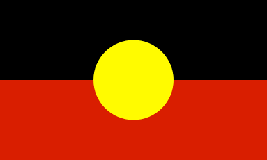
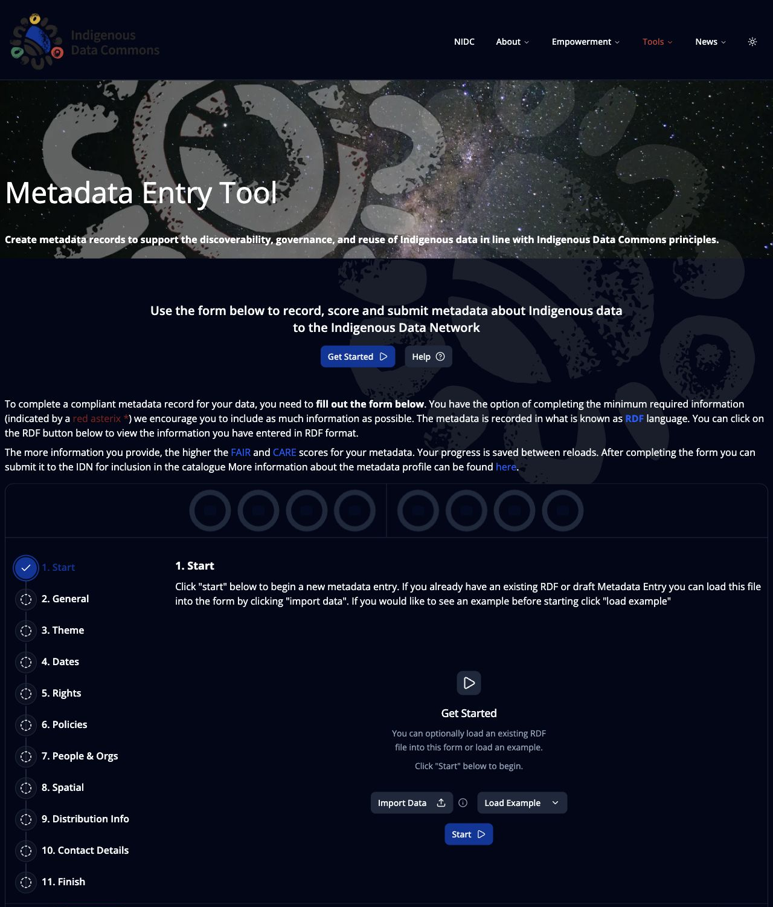
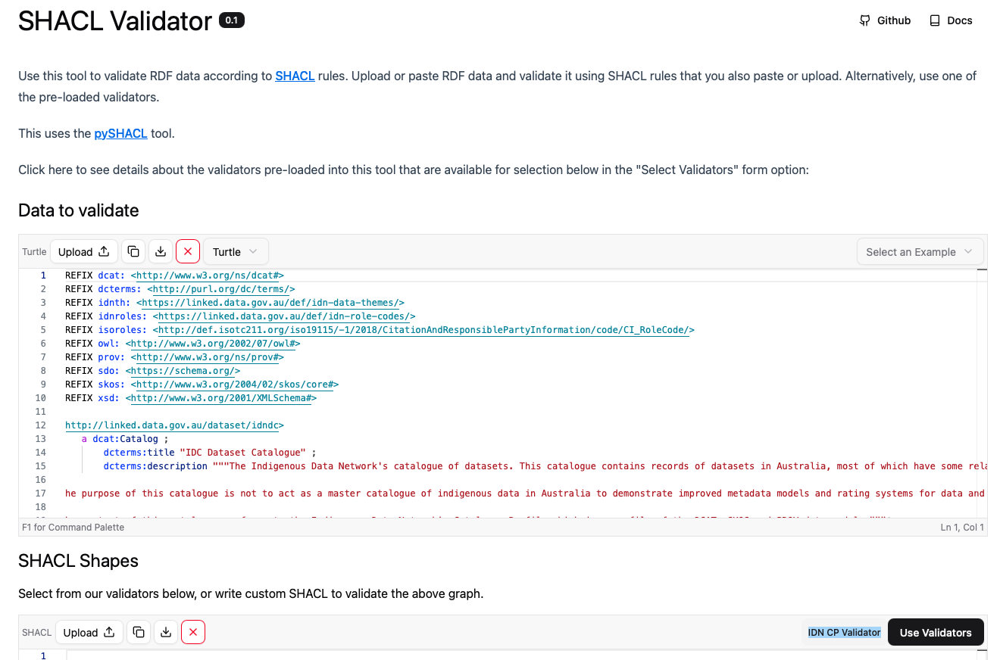
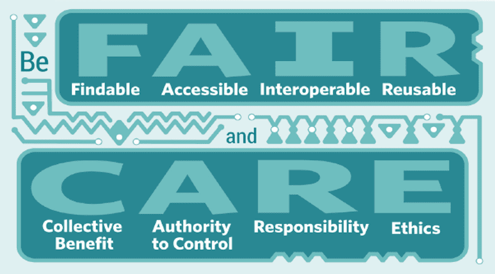

IDN Catalogue Profile - Guidance
This is a guide to assist you with using the Indigenous Data Network's Catalogue Profile.
How do I...
- Indicate something in a catalogue is Indigenous?
- See some examples?
- Create metadata according to the profile?
- Validate my metadata?
- Calculate and improve FAIR, CARE & DGD scores?
- Understand the Catalogue Profile, at a high level?
- Express my catalogue's metadata according to the profile but in other formats?
-
Metadata Details
- See the Specification Document
-
All Profile Resources
- See the Profile Resources
Describe how data relates to Indigenous peoples
Sometimes a catalogue agent can confidently state how data relates to Indigenous peoples. At other times, the relationship is apparent from several details but cannot responsibly be reduced to a single statement. The IDN Catalogue Profile supports both situations: you can describe the available evidence, make a direct classification, or do both.
These approaches are complementary. A classification is a clear assertion; links to people, organisations, policies, themes, languages and places preserve the context behind it. Do not infer the Indigenous status of a person or organisation from a name, subject or association. Record identity information only when it is supported by an appropriate source and is suitable to publish.

This data may be Indigenous
“This data may be Indigenous, but I am not sure. The author is not Indigenous, but the resource includes an Indigenous language and the translator is Indigenous. The publisher is an Indigenous organisation within a larger non-Indigenous organisation. Some, but not all, of the themes are Indigenous. The data is governed under an Indigenous data governance policy, and its custodian is Indigenous. I can verify most or all of these details, so I will record them. The resulting metadata and its CARE assessment will help people understand the resource without forcing me to make an unsupported yes-or-no claim.”
Record each fact you can support: the people and organisations involved and their roles; relevant governance policies; themes; languages; places; and a clear description of the resource. Together, these statements form an evidence graph that preserves nuance and makes the basis for later decisions inspectable.
Supplying this detail builds an evidence graph and should progressively increase the resource's CARE score. In this situation, you do not have to force the evidence into an unsupported “it is” or “it is not” conclusion: the Profile helps you work through and communicate what is known. The score supports that judgement by assessing the metadata against defined indicators; it does not itself prove that the data is Indigenous, decide whether it belongs in a particular catalogue, or establish that its governance is adequate. The CARE scoring definition specifies how the evidence should affect the score.
I know this data is Indigenous
“I know this data is Indigenous and have no reason to doubt it. I cannot verify all of its provenance and attributions in a structured way, and I do not have exact details of every agent or governance arrangement. I will use the Data Indigeneity vocabulary to record the relationship I can confidently assert.”
Use the Data Indigeneity vocabulary when you are confident that the classification is accurate. Choose the specific applicable concepts—By Indigenous People, About Indigenous People and/or About Indigenous Things—rather than applying an ambiguous “Indigenous” label:
:resource-x schema:keywords <https://data.idnau.org/pid/vocab/indigeneity/about-indigenous-people> .
Applying a Data Indigeneity term should significantly increase the resource's CARE score, even when fuller provenance, attribution or governance metadata is unavailable. Some specific terms, particularly By Indigenous People, may satisfy more than one scoring indicator. Use this vocabulary when you are confident of the applicable relationship; the direct classification does not replace supporting detail when that detail can be supplied.
What evidence should I record?
Supply as much relevant, verifiable detail as is available and appropriate to publish. Prefer persistent HTTP identifiers for people, organisations, concepts and places so that the relationships can be followed as a graph. The IDN reference data catalogue and IDN Agents Database can help you find suitable identifiers.
- Description: explain the resource's content, context and any uncertainty in plain language.
- Themes: use
schema:keywordswith concepts from vocabularies such as IDN Themes or the ANZSRC Fields of Research. - Languages: distinguish data about a language (a theme) from content in a
language. Use
schema:inLanguagewith a concept from AustLang for the latter. - Places: use
schema:spatialCoverageto link to an Indigenous Location, Native Title determination or other relevant place. - People and organisations: link each agent to the resource and state its role using the
Profile's
prov:qualifiedAttributionpattern and the Data Roles vocabulary. See the Agents section of the Specification. - Agent indigeneity: where the information is supported and appropriate to publish, describe an organisation with the Organisations Indigeneity vocabulary or a person with the Indigenous Status of Persons vocabulary. These vocabularies classify agents, not the data itself.
- Governance: link the resource to relevant policies or governance frameworks and describe the agents responsible for them.
For example:
:resource-x
schema:keywords <https://linked.data.gov.au/def/anzsrc-for/2020/450601> ;
schema:inLanguage <https://data.idnau.org/pid/austlang/C6> ;
schema:spatialCoverage <https://linked.data.gov.au/dataset/asgsed3/ILOC/70900503> ;
prov:qualifiedAttribution [
a prov:Attribution ;
schema:agent <https://example.org/agent/123> ;
schema:roleName <https://linked.data.gov.au/def/data-roles/custodian>
] .
Examples
Minimal
A dataset resource online with minimal metadata:
For this dataset we have only:
| Property | Value |
|---|---|
| Identifier | https://data.idnau.org/pid/BSA |
| Title | Briscoe-Smith Archive |
| Description | Historical population data and biographical records |
| Agent / Role |
Gordon Briscoe & Len Smith / Author Indigenous Australians / Subject Agent |
It has a simple title, brief description and several Agent (an organisations & people) associated with it. This item is easily understood to be Indigenous - it's about Indigenous Australians - but it's FAIR and CARE scores aren't great: a lot of simple metadata could easily be added.
The machine-readable version of this metadata record is reproduced here in the RDF Turtle format:
PREFIX droles: <https://linked.data.gov.au/def/data-roles/> PREFIX prov: <http://www.w3.org/ns/prov#> PREFIX schema: <https://schema.org/> <https://data.idnau.org/pid/BSA> a schema:CreativeWork ; schema:name "Briscoe-Smith Archive" ; schema:description "Historical population data and biographical records" ; prov:qualifiedAttribution [ schema:roleName droles:author ; schema:agent <https://orcid.org/0000-0002-5477-0874> , "Gordon Briscoe" ; ] , [ schema:roleName droles:subjectAgent ; schema:agent <https://vocabularyserver.com/apais/xml.php?skosTema=1096> ] , [ schema:roleName droles:custodian ; schema:agent <https://linked.data.gov.au/org/ada> ] ; .
Full
A well-described dataset from the IDN Keeping Place Catalogue:
This example shows how familiar information about a dataset can be expressed using the profile:
| Property | Value |
|---|---|
| Identifier | https://data.idnau.org/pid/resource/d23405b4-fc04-47e2-9e7a-9c5735ae3780 |
| Type | Dataset |
| Title | Agreements, Treaties and Negotiated Settlements |
| Description | The ATNS Database documents agreements, treaties and negotiated settlements between Indigenous peoples and governments, primarily in Australia. |
| Date Created | 2002 |
| Date Modified | 2026-05-25 |
| License | Creative Commons BY-NC-ND 4.0 |
| Access | Public |
| Distribution | ATNS Database website |
| Creator | Marcia Langton |
| Custodian | University of Melbourne |
| Publisher | Indigenous Studies Unit |
| Themes |
Aboriginal land rights; Native title |
| Agent/Role |
Marcia Langton / owner University of Melbourne / custodian |
The record has a persistent IDN identifier and links to the people, organisations, licence, access statement and subject vocabularies that help people understand and use the dataset.
The machine-readable version of this metadata record is reproduced here in the RDF Turtle format:
PREFIX droles: <https://linked.data.gov.au/def/data-roles/> PREFIX indigeneity: <https://data.idnau.org/pid/vocab/indigeneity/> PREFIX prov: <http://www.w3.org/ns/prov#> PREFIX schema: <https://schema.org/> PREFIX xsd: <http://www.w3.org/2001/XMLSchema#> <https://data.idnau.org/pid/resource/d23405b4-fc04-47e2-9e7a-9c5735ae3780> a schema:Dataset ; schema:name "Agreements, Treaties and Negotiated Settlements" ; schema:description "The ATNS Database documents agreements, treaties and negotiated settlements between Indigenous peoples and governments, primarily in Australia."@en ; schema:dateCreated "2002"^^xsd:gYear ; schema:dateModified "2026-05-25"^^xsd:date ; schema:creator <https://orcid.org/0000-0002-1398-7524> ; schema:publisher <https://linked.data.gov.au/org/isu> ; schema:license <http://purl.org/NET/rdflicense/cc-by-nc-nd4.0> ; schema:conditionsOfAccess "Public"@en ; schema:distribution [ a schema:DataDownload ; schema:name "ATNS Database website" ; schema:url "https://www.atns.net.au/"^^xsd:anyURI ; ] ; schema:keywords indigeneity:by-indigenous-people , indigeneity:about-indigenous-people , indigeneity:about-indigenous-things , <https://vocabularyserver.com/apais/xml.php?skosTema=14> , <https://vocabularyserver.com/apais/xml.php?skosTema=1483> ; prov:qualifiedAttribution [ a prov:Attribution ; schema:roleName droles:owner ; schema:agent <https://orcid.org/0000-0002-1398-7524> ; ] , [ a prov:Attribution ; schema:roleName droles:custodian ; schema:agent <https://linked.data.gov.au/org/uom> ; ] ; .
Create metadata according to the profile
You will need to produce metadata in a specific format - RDF - to meet the requirements of this Profile, however, there are tools to assist with this.
You can:
- Use the Metadata Entry Tool
- Type out RDF data, manually
- Use Software
Use the Metadata Entry Tool
This is our recommended starting point
The Indigenous Data Network maintains an online, interactive, tool that you can use to create metadata according to the IDN Catalogue Profile.
The tool contains examples you can load, video tutorials and displays the metadata it creates as you fill in form fields.
It auto-calculates CARE and FAIR scores as you go too.

PREFIX prov: <http://www.w3.org/ns/prov#>
PREFIX schema: <https://schema.org/>
PREFIX xsd: <http://www.w3.org/2001/XMLSchema#>
<https://data.idnau.org/pid/resource/52f6121c-724f-47b4-9adf-b785dbcdae03>
a schema:CreativeWork ;
schema:additionalType schema:Book ;
schema:dateCreated "1976-01-01"^^xsd:date ;
schema:description "Aboriginal and Torres Strait Islander peoples are warned that this resource may contain images, transcripts or names of Aboriginal and Torres Strait Islander peoples now deceased. This resource is not for general viewing, in areas where traditional Aboriginal religion is still significant, this book should be used only after consultation with local male religious leaders as it contains ceremonial and gender specific information. It may also contain historically and culturally sensitive words, terms, and descriptions." ;
schema:dateModified "2024-04-28"^^xsd:date ;
schema:name "Nomads of the Australian desert" ;
schema:keywords
<https://data.idnau.org/pid/vocab/indigeneity/about-indigenous-people> ,
<https://vocabularyserver.com/apais/xml.php?skosTema=7> ,
<https://vocabularyserver.com/apais/xml.php?skosTema=8> ;
prov:qualifiedAttribution
[a prov:Attribution ;
schema:roleName <https://linked.data.gov.au/def/data-roles/author> ;
schema:agent <https://data.idnau.org/pid/person/8cfcfc08-3cec-40e1-a772-a8860c118c9d> ;
] ,
[a prov:Attribution ;
schema:roleName <https://linked.data.gov.au/def/data-roles/custodian> ;
schema:agent <https://data.idnau.org/pid/org/29c3e9cb-5ea5-456e-b4fa-a90828207ffc> ;
] ;
.
<https://data.idnau.org/pid/org/29c3e9cb-5ea5-456e-b4fa-a90828207ffc>
a schema:Organization ;
schema:name "University of Queensland Library" ;
.
<https://data.idnau.org/pid/person/8cfcfc08-3cec-40e1-a772-a8860c118c9d>
a schema:Person ;
schema:name "Charles Pearcy Mountford" ;
.
Type out RDF data, manually
The metadata format for the IDN's Catalogue Profile is RDF, which can be created in a plain text file.
The Metadata Entry Tool auto-generates RDF as you fill it out, but you are also able to manually type out data files if you like.
See this profile's Specification Document's Examples Section for a complete RDF data file and remember: you can validate RDF data files supplied in this profile
Since the IDN CP is a profile of DCAT, the Data Catalog Vocabulary, and reuses many DCAT elements, you can use DCAT's documentation that contains lots of RDF examples too.
Use Software
Lots of catalogue tools are able to export metadata in formats that are compatible with this profile. For example, the open source CKAN tool can implement its own profiles of DCAT which are compatible with this profile! Another example: the EMu collections management software can export Dublin Core metadata in an XML format that is also interpretable as RDF.
Validate my metadata
To validate data against this profile, there is a Validation file and a Validation tool preloaded with the validation file. See the Specification Document Validation Section for valid metadata examples.
Validation file
One of the resources within this profile is a Validator in SHACL data file. It can be used with validation tools to automatically check the validity of metadata.
Validation tool
A Validation tool that uses the Validation data file is also available. (Select the "IDN CP Validator" option from the Use Validators selector.)

This validator file and the validator tool are only able to test for structural and values validation - is the metadata correctly formatted and machine-readable - it can't test for the appropriateness or the goodness of metadata. For that, you will need to try calculating FAIR or CARE scores and compare what you get to your own expectations of your metadata.
CARE, FAIR and DGD scores
One aim of this catalogue profile is to support either manual or automated use of software to calculate FAIR, CARE and Data Governance Distance scores for resources described by metadata. Doing this automatically allows calculation for large numbers of items.

View and report scores
The Metadata Entry Tool automatically calculates these scores as you use it, and it details how scores are created too.
The IDN also provides the underlying software to calculate scores from IDN CP metadata: Scores Calculator. If you're technical, you can dive into the weeds of score creation - and please let us know what you think about the methods we have implemented!
The FAIR and CARE principles are widely known and many other tools exist for at least FAIR self-assessment, such as the ARDC's FAIR Data Self Assessment Tool, so you can use these tools alongside the IDN's to cross-check.
Improve FAIR, CARE or DGD scores
Since the Metadata Entry Tool details how its scores are created, you should be able to see what to do to improve your scores. For example, for the A1 part of the Accessibility score of FAIR, if you indicate access using standard terminology such as "Access to metadata", or "Conditional access", you will get some score. If you indicate the most accessible form, "Open access", you will get the best A1 score.
If you want to improve scores en masse, perhaps across a whole catalogue, review the scoring definitions used by the IDN's Scores Calculator software. For example, the FAIR scoring definition describes how metadata elements contribute to the various FAIR assessment components and can help identify catalogue-wide metadata improvements with the greatest impact on scores. If you want to increase score en masse, perhaps across a whole catalogue, have a look at the calculation functions in the IDN's Scores Calculator software. The function used for the A1 part of the Assessment FAIR score is calculate_a().
Express my metadata in other formats
You will need to do two things
- Work out conceptually how to express elements of your metadata in this profile's terms
- Create a technical or an informal (written) mapping
If you can work out the first part but cannot implement a technical mapping for automated translation, at least describe your understanding of the mapping in prose. The IDN staff may be able to help.
The Mappings Section of the Specification Document describes some mappings from the IDN CP to other models. Since the current profile primarily expresses catalogue metadata using schema.org, mappings from schema.org to other metadata models are relevant. For example, see the W3C's DCAT/ISO mapping.
Some systems use very different metadata formats, not just models.
Understand the Catalogue Profile, at a high level
What
Metadata is used to describe things in catalogues, so they can be discovered, understood and used.
The IDN Catalogue Profile is formally declared as a profile of DCAT, SKOS and PROV-O. Its current metadata model primarily uses schema.org classes and properties, together with PROV-O and SKOS terms, and provides mappings to DCAT and other catalogue models.
This combination is tuned to support:
- indicating the Indigenousness, or otherwise, of data
- describing governance arrangement for data
Use of metadata according to this Profile should allow users to tell how catalogued resources relate to Indigenous people and what arrangements are in place for sensitive governance of them.
No amount of metadata can substitute for actual governance arrangements, so use of this Catalogue Profile is limited to the representation of such arrangements only.
How
The Profile reuses terms from established vocabularies rather than creating a completely new metadata language. It specifies how those terms should be combined and supplies reference data for describing Indigenous data and its governance consistently.
This Profile suggests three main things you can do to address the dot points above for a resource:
- Record basic, standardised, metadata for it
- Represent, in detail, relations people and organisations have to it
- Indicate any policies that you have that affect it
These three approaches are detailed as "patterns" in the Specification Document's Patterns Section.
Document Info
Information (metadata) about this document:
- URI
https://data.idnau.org/pid/cp/guide↗- Is Part Of
- IDN Catalogue Profile
- Publisher(s)
- Indigenous Data Network
- Creator(s)
- Nicholas J. Car
- Dates
-
Created 2022-03-18 Issued 2024-03-15 Modified 2026-08-28 - Version
- 0.0.2
- History note
- 2026-08: rewrote the guidance for describing data indigeneity as two evidence-based scenarios
2026-05: changed examples from DCAT + DCTERMS to schema.org - License
- Attribution 4.0 International (CC BY 4.0)
- Copyright
- Indigenous Data Network, 2022 - 2024